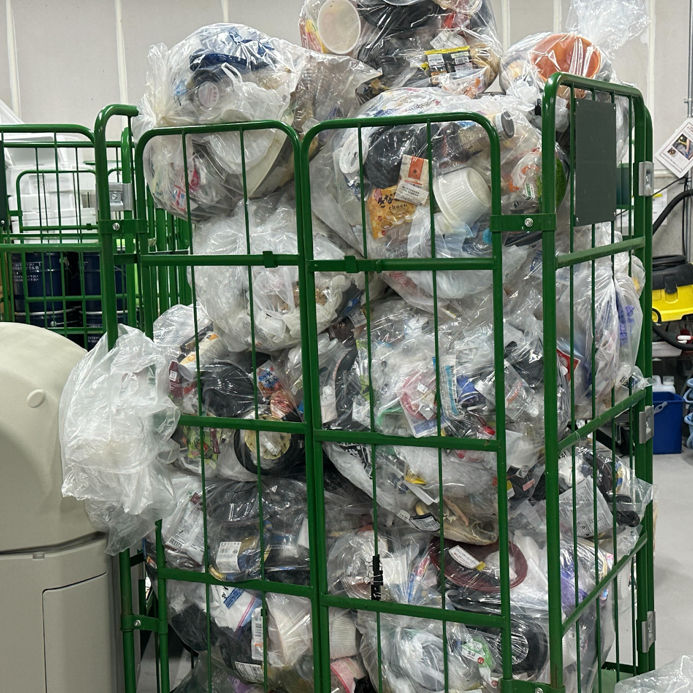
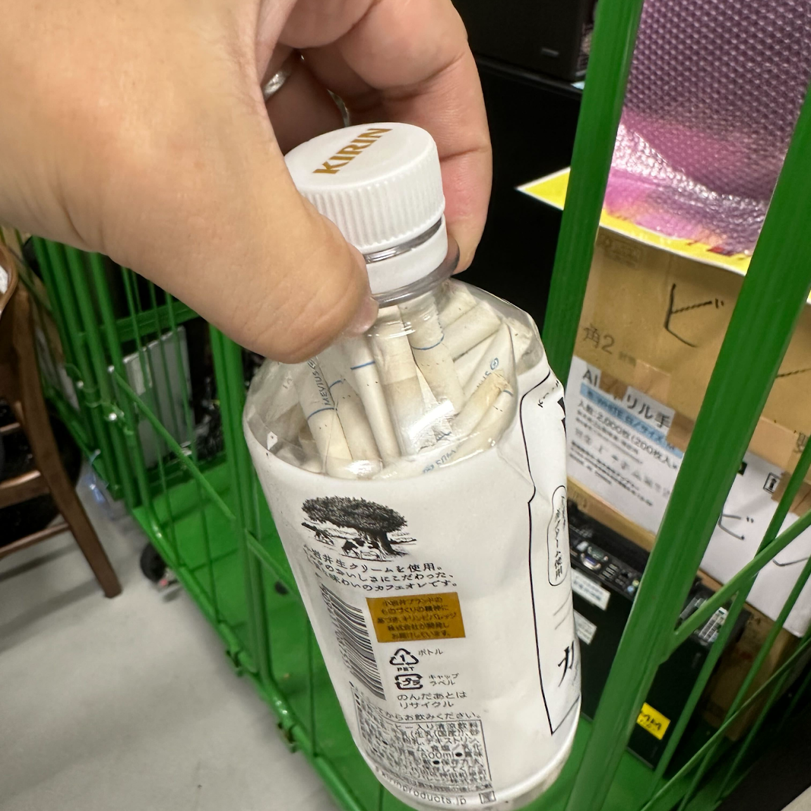
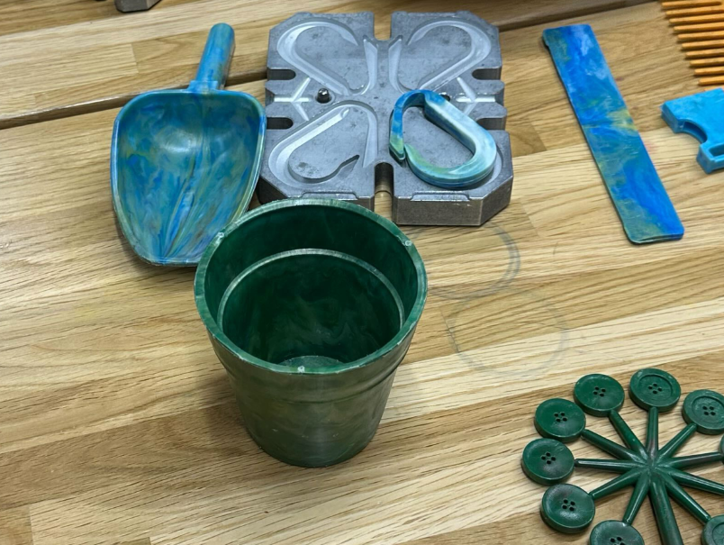
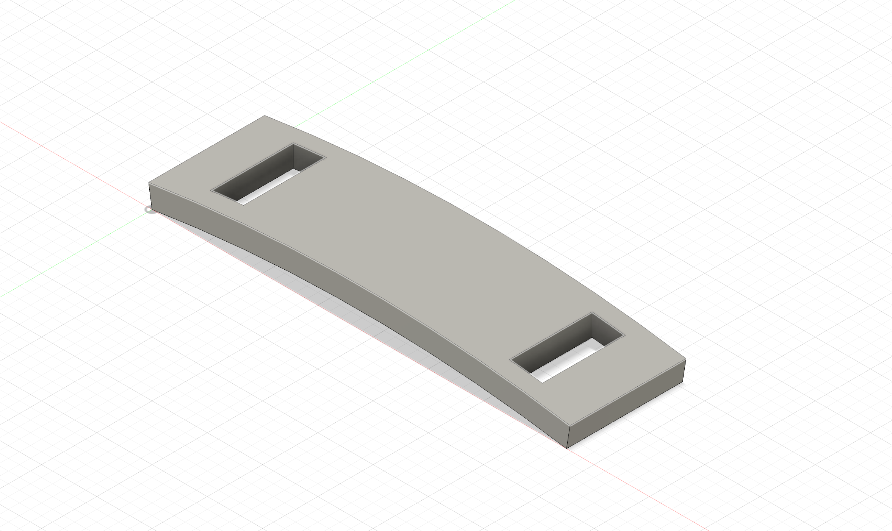
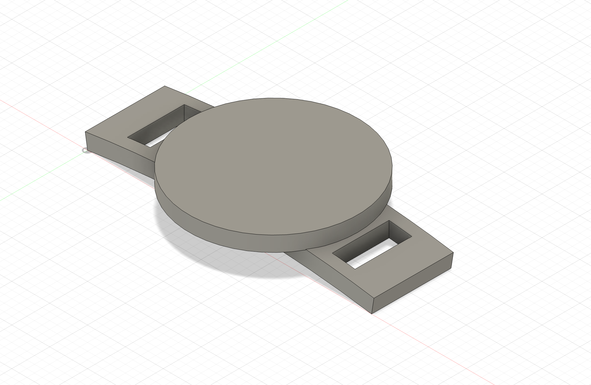
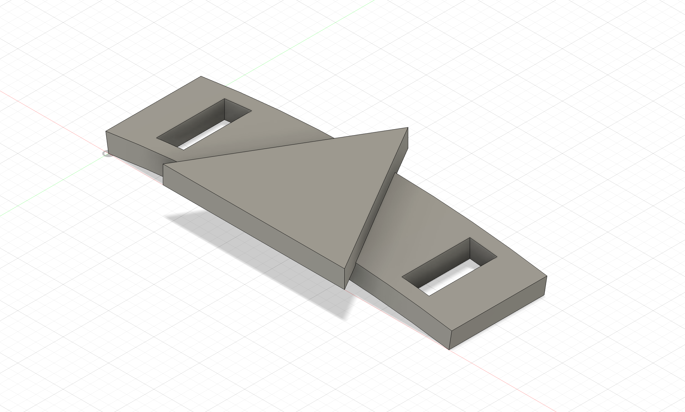
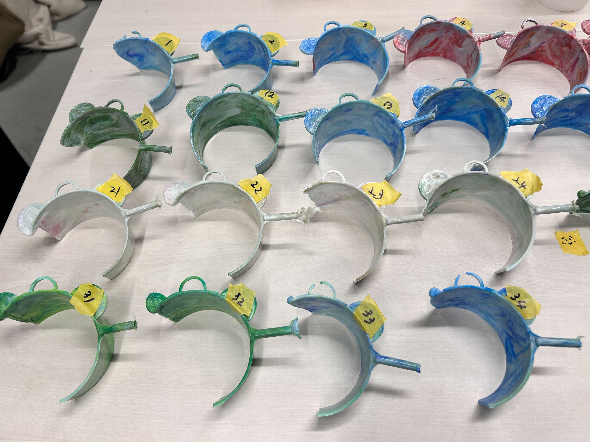
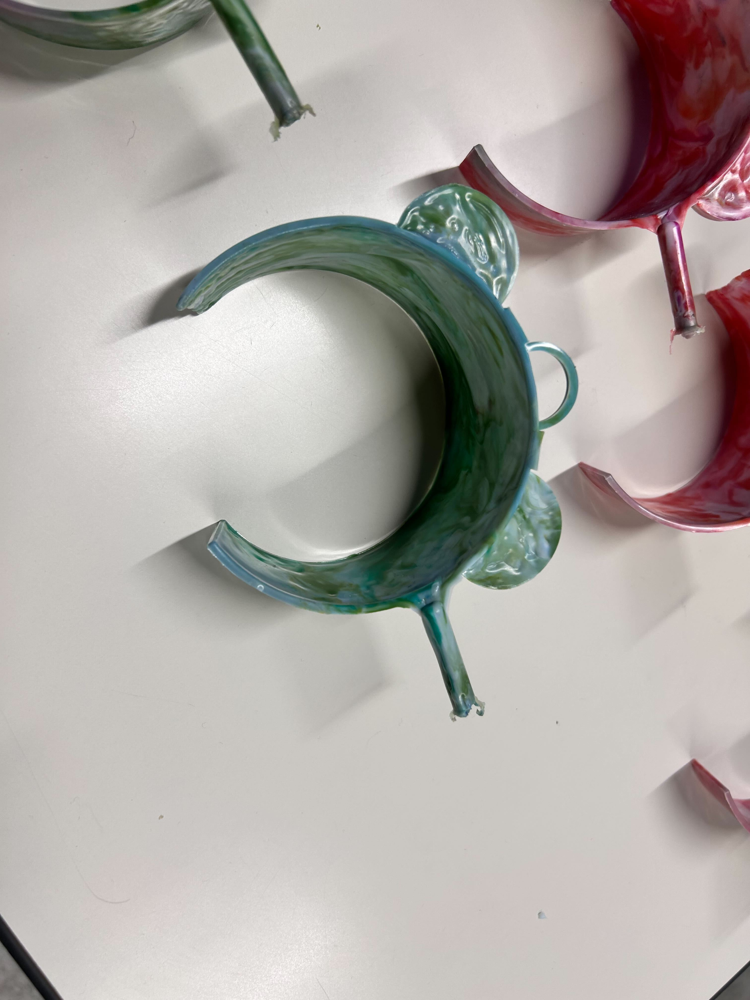

後期サーキュラーデザイン
湘南貿易さんと神奈川大学



後期に行うプロジェクトは「サーキュラーデザイン」がテーマになる循環型社会を目指す湘南貿易さんとのコラボレーションになる。
私たちのみなとみらいキャンパスでは毎日大量のゴミを回収していて、横浜市の厳しい基準を通過するように分別をしてくれている人たちがわたしたちの知らないところで作業していた...
私たちがゴミ箱にゴミを入れる段階で分別できるようになっているが、きちんと分別している学生がごく少数であると判明した。特にひどいゴミはペットボトルに吸い殻をパンパンに詰め込んでいたゴミだ。
今回のプロジェクトではペットボトルキャップを溶かして作る製品を開発する。キャップの色によって製品に個性を出すことができる。このキャップの再利用を通じて神奈川大学の中で小さいが循環型社会形成を目指す
サイズは最大20mm X 5mmで小さな製品になってしまうが各班のコンペで知恵を絞り出す。
考えた作品




鎌倉プロジェクトはMESHの比べて進行がとても遅れている。私はお道具箱とイヤホンの2つを担当しているがイヤホンしか進んでいない。
イヤホンは基礎の設計まで進めることができたので、ここから夏休みの間にオリジナル性を出すことに注力する
お道具箱はもう一人のゼミ生が設計していて、試作まで進んでいるのも確認した。夏休みの間に形にして完成させることがマストです
採用され完成した作品


鎌倉プロジェクトはMESHの比べて進行がとても遅れている。私はお道具箱とイヤホンの2つを担当しているがイヤホンしか進んでいない。
イヤホンは基礎の設計まで進めることができたので、ここから夏休みの間にオリジナル性を出すことに注力する
お道具箱はもう一人のゼミ生が設計していて、試作まで進んでいるのも確認した。夏休みの間に形にして完成させることがマストです